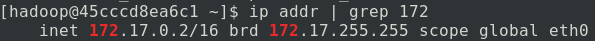
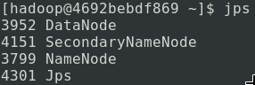
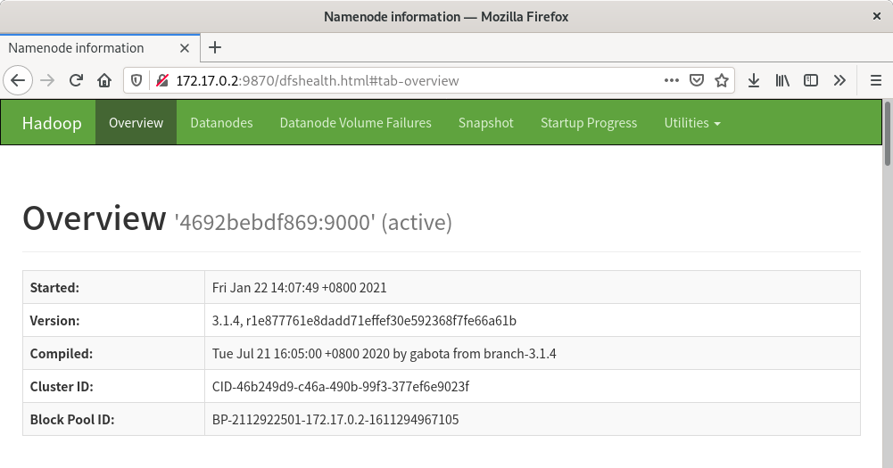

Los tres modos de Hadoop mencionados anteriormente:Modo local、Modo pseudocluster和Modo clúster。
Modo local: Hadoop solo existe como biblioteca, puede ejecutar tareas de MapReduce en una sola computadora, y se utiliza únicamente para que los desarrolladores creen entornos de aprendizaje y experimentación.
Modo pseudocluster: En este modo, Hadoop se ejecutará en una sola máquina como proceso demonio, generalmente utilizado para que los desarrolladores construyan entornos de aprendizaje y experimentación.
Modo clúster: Este modo es el modo de entorno de producción de Hadoop, es decir, es el modo que Hadoop utiliza realmente para proporcionar servicios de nivel de producción.
Configuración y arranque de HDFS
HDFS, similar a una base de datos, se inicia como proceso demonio. Para usar HDFS, es necesario que el cliente HDFS se conecte al servidor HDFS a través de la red (socket) para utilizar el sistema de archivos.
在Entorno de ejecución de HadoopEn el capítulo anterior, ya hemos configurado el entorno básico de Hadoop, con el contenedor llamado hadoop_single. Si la última vez cerró ese contenedor o apagó la computadora y el contenedor se cerró, por favor inicie y entre en ese contenedor.
Después de entrar en el contenedor, confirmemos si Hadoop existe:
hadoop version
Si el resultado muestra el número de versión de Hadoop, significa que Hadoop existe.
A continuación, procederemos con los pasos formales.
Crear un usuario hadoop
Cree un nuevo usuario llamado hadoop:
adduser hadoop
Instale una pequeña herramienta para modificar la contraseña del usuario y la gestión de permisos:
yum install -y passwd sudo
Establezca la contraseña del usuario hadoop:
passwd hadoop
A continuación, introduzca la contraseña dos veces. ¡Asegúrese de recordarla!
Cambie el propietario del directorio de instalación de Hadoop al usuario hadoop:
chown -R hadoop /usr/local/hadoop
Luego use un editor de texto para modificar el archivo /etc/sudoers, y en
root ALL=(ALL) ALL
después agregue una línea
hadoop ALL=(ALL) ALL
Luego salga del contenedor.
Cierre y haga commit del contenedor hadoop_single a la imagen hadoop_proto:
docker stop hadoop_single docker commit hadoop_single hadoop_proto
Cree un nuevo contenedor hdfs_single:
docker run -d --name=hdfs_single --privileged hadoop_proto /usr/sbin/init
Así, el nuevo usuario ha sido creado.
Iniciar HDFS
Ahora entre en el contenedor recién creado:
docker exec -it hdfs_single su hadoop
Ahora debería ser el usuario hadoop:
whoami
Debería mostrar "hadoop"
Genere la clave SSH:
ssh-keygen -t rsa
Aquí puede pulsar Enter repetidamente hasta que finalice la generación.
Luego agregue la clave generada a la lista de confianza:
ssh-copy-id hadoop@172.17.0.2
Consulte la dirección IP del contenedor:
ip addr | grep 172

De esto se sabe que la dirección IP del contenedor es 172.17.0.2; su IP puede ser diferente.
Antes de iniciar HDFS, realizamos algunas configuraciones simples. Todos los archivos de configuración de Hadoop se almacenan en el subdirectorio etc/hadoop del directorio de instalación, por lo que podemos entrar en este directorio:
cd $HADOOP_HOME/etc/hadoop
Aquí modificamos dos archivos: core-site.xml y hdfs-site.xml
En core-site.xml, agregamos las propiedades bajo la etiqueta:
<property>
<name>fs.defaultFS</name>
<value>hdfs://<你的IP>:9000</value>
</property>
En hdfs-site.xml, agregue las propiedades bajo la etiqueta:
<property>
<name>dfs.replication</name>
<value>1</value>
</property>
Formatee la estructura de archivos:
hdfs namenode -format
Luego inicie HDFS:
start-dfs.sh
El arranque se divide en tres pasos: iniciar NameNode, DataNode y Secondary NameNode.
Podemos ejecutar jps para ver los procesos de Java:

En este punto, el proceso demonio de HDFS se ha establecido. Como HDFS tiene un panel HTTP, podemos acceder a través del navegador a http://IP_de_tu_contenedor:9870/ para ver el panel de HDFS y la información detallada:

Si aparece esta página, significa que la configuración e iniciación de HDFS fueron exitosas.
Nota:Si está utilizando un sistema Linux sin entorno de escritorio y no tiene navegador, puede omitir este paso. Si está utilizando Windows pero no usa Docker Desktop, este paso será difícil de realizar para usted.
Uso de HDFS
HDFS Shell
Vuelva al contenedor hdfs_single; los siguientes comandos se utilizarán para operar HDFS:
# 显示根目录 / 下的文件和子目录，绝对路径 hadoop fs -ls / # 新建文件夹，绝对路径 hadoop fs -mkdir /hello # 上传文件 hadoop fs -put hello.txt /hello/ # 下载文件 hadoop fs -get /hello/hello.txt # 输出文件内容 hadoop fs -cat /hello/hello.txt
Los comandos más básicos de HDFS se mencionaron anteriormente; además, hay muchas otras operaciones compatibles con los sistemas de archivos tradicionales.
HDFS API
HDFS ya es compatible con muchas plataformas backend; actualmente, la distribución oficial incluye interfaces de programación para C/C++ y Java. Además, los administradores de paquetes de node.js y Python también permiten importar el cliente HDFS.
La siguiente es la lista de dependencias del administrador de paquetes:
Maven：
<dependency>
<groupId>org.apache.hadoop</groupId>
<artifactId>hadoop-client</artifactId>
<version>3.1.4</version>
</dependency>
Gradle：
providedCompile group: 'org.apache.hadoop', name: 'hadoop-hdfs-client', version: '3.1.4'
NPM：
npm i webhdfs
pip：
pip install hdfs
Aquí se proporciona un ejemplo de conexión de Java a HDFS (no olvide modificar la dirección IP):
Ejemplo
import java.io.IOException;
import org.apache.hadoop.conf.Configuration;
import org.apache.hadoop.fs.*;
public class Application {
public static void main(String[] args) {
try {
// Configurar la dirección de conexión
Configuration conf = new Configuration();
conf.set("fs.defaultFS", "hdfs://172.17.0.2:9000");
FileSystem fs = FileSystem.get(conf);
// Abrir el archivo y leer la salida
Path hello = new Path("/hello/hello.txt");
FSDataInputStream ins = fs.open(hello);
int ch = ins.read();
while (ch != -1) {
System.out.print((char)ch);
ch = ins.read();
}
System.out.println();
} catch (IOException ioe) {
ioe.printStackTrace();
}
}
}
Haz clic para compartir notas
<p style="font-size:14px;">¡Las notas deben ser una extensión del contenido de este artículo!</p><br> <p style="font-size:12px;"><a href="../tougao.html" target="_blank">Envío de artículos, haz clic aquí</a></p> <p style="font-size:14px;"><a href="./runoob-user-test-intro.html" target="_blank">Cómo obtener el código de invitación de registro</a></p> <h3 class="text-muted"><i class="fa fa-info-circle" aria-hidden="true"></i> Antes de compartir notas debe <a href=".." class="runoob-pop">iniciar sesión</a>!</h3> <p><a href="./runoob-user-test-intro.html" target="_blank">Cómo obtener el código de invitación de registro</a></p>